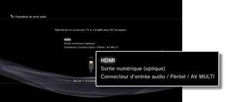

Paramètres > Paramètres son > Paramètres de sortie audio
Paramètres de sortie audio
Pour régler les paramètres de sortie audio du système. Ces paramètres sont généralement utilisés lorsque le système est raccordé aux périphériques audio prenant en charge la sortie audio numérique, tels que des amplificateurs AV (récepteurs) destinés aux systèmes home cinéma.
1. |
Confirmez les formats pris en charge par votre périphérique audio. |
|||||||||||||||||||||||
|---|---|---|---|---|---|---|---|---|---|---|---|---|---|---|---|---|---|---|---|---|---|---|---|---|
2. |
Sélectionnez |
|||||||||||||||||||||||
3. |
Sélectionnez [Paramètres de sortie audio]. |
|||||||||||||||||||||||
4. |
Sélectionnez le connecteur d'entrée sur le périphérique audio. Le nombre de canaux et les formats audio pris en charge varient en fonction du connecteur utilisé. 
|
|||||||||||||||||||||||
5. |
Sélectionnez les formats de sortie audio.
|
|||||||||||||||||||||||
6. |
Vérifiez vos paramètres.
|
|||||||||||||||||||||||
7. |
Enregistrez vos paramètres. |
|||||||||||||||||||||||


 .
.
Conseils
- Par défaut, le son [PCM linéaire 2 can.] est reproduit par tous les connecteurs de sortie. Si vous modifiez les paramètres de sortie audio, le son n'est reproduit qu'à partir des connecteurs choisis.
- Si vous modifiez les paramètres de sortie audio, le système ne peut plus reproduire le son provenant de plusieurs connecteurs de sortie simultanément. Par exemple, si votre système est raccordé à un téléviseur à l'aide d'un câble HDMI et à un périphérique audio à l'aide d'un câble optique numérique et si vous basculez vers [Sortie numérique (optique)] sous [Paramètres de sortie audio], le téléviseur ne reproduit plus le son. Pour reproduire le son du téléviseur, basculez vers [HDMI] ou sélectionnez
 (Paramètres) >
(Paramètres) >  (Paramètres son) > [Sortie audio multiple], puis réglez l'option sur [Oui].
(Paramètres son) > [Sortie audio multiple], puis réglez l'option sur [Oui]. - Si vous sélectionnez [PCM linéaire 2 can. 88.2 kHz] ou [PCM linéaire 2 can. 176.4 kHz] à l'étape 5, le son risque d'être saccadé ou de ne pas être reproduit par certains périphériques audio.
- Si vous utilisez un câble HDMI, seule l’audio du [PCM linéaire 2 can.] est reproduit à partir des logiciels au format PlayStation®2 et PlayStation®. Pour reproduire de l’audio Dolby Digital ou DTS, vous devez raccorder le système PS3™ au périphérique audio à l'aide d'un câble optique numérique et basculer vers [Sortie numérique (optique)] sous [Paramètres de sortie audio].
- Si un périphérique non compatible avec la norme HDCP (High-bandwidth Digital Content Protection) est connecté au système à l'aide d'un câble HDMI, le système est incapable de reproduire la vidéo et/ou le son.
Avis
- Il est possible que certains titres de logiciels au format PlayStation®2 ou PlayStation® fonctionnent différemment avec le système PS3™ par rapport aux systèmes PlayStation®2 ou PlayStation®, ou qu'ils ne fonctionnent pas correctement avec le système PS3™.
- En outre, certains logiciels au format PlayStation®2 ne peuvent pas être lus sur certains systèmes PS3™. Pour plus d'informations, consultez [Types de disques lisibles], visitez le site Web SCE de votre région ou reportez-vous à la documentation qui accompagne votre système PS3™.